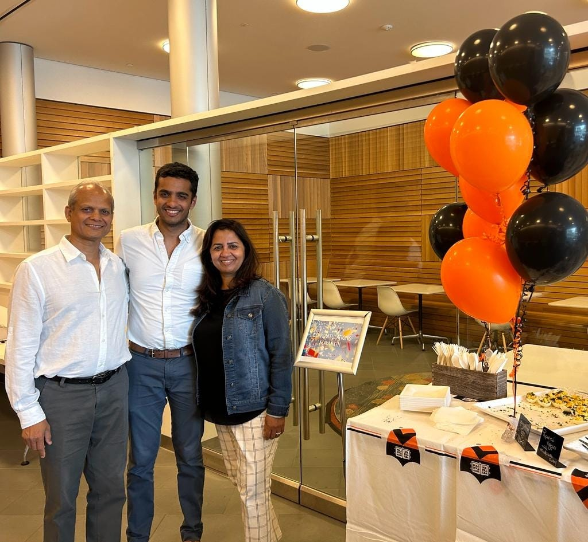

Did I -- a trained decision theorist -- make a horribly risky decision to leave a path of tenure and prestige for a West Coast gold-rush atmosphere where intellectual publications mean nothing?
The first thing to know about me is I’m an Agrawal, part of a historical Indian caste centered around trade, commerce, and finance. Business is a way of life.
The PhD was the detour. I was the youngest in my extended family, so I had minimal street cred and a rebellious spirit. The first-order move was to renounce business and become an intellectual. The second-order move was to build an intellectually rigorous business.
That would be my path. Theoretically. First, I had to figure out how to do research, and thus began a long apprenticeship that raised eyebrows.
Swarthmore College, a small liberal arts school in suburban Pennsylvania, is not exactly where a lot of Indian-American boys from Texas end up. My family expected me to pursue an engineering degree at a nationally-renowned university, on a fast-track to business success. But I became obsessed with the PhD. Swarthmore has one of the highest PhDs-per-capita and the “quirky” students are the ones that don’t want one. Perhaps just as important, Swarthmore brands itself as an institution that maximizes learning. My bet was that the most valuable education was learning how to think.
The returns started coming by sophomore year. I became proficient in computer science despite zero high school coding experience, I developed a newfound appreciation of math after being exposed to proof-based approaches, and I discovered philosophy to integrate my logic brain and my writing-as-therapy practice.
When graduation came, the technology market was thriving, and my computer science degree positioned me well for a high-paying job in a tech firm. Was now the opportunity for my research career?
Miraculously, I discovered and was accepted to a PhD to the Princeton Psychology and Neuroscience departments. Princeton stood out for its approach to study the human mind. I had felt computer science departments to be too focused on incrementally maximizing benchmarks whereas philosophy departments were inducing mental health crises among their graduate students. Psychology and neuroscience seemed like a clean middle ground between computer science and philosophy. Most importantly, Princeton cognitive science was hyper-collaborative and fearlessly welcoming to interdisciplinarity, the perfect atmosphere for what would become my identity as a synthesizer.
I soon traded the suburban Swarthmore, PA for the stone halls of Princeton. While there, I worked with three giants of the field: Jon Cohen, Tom Griffiths, Nathaniel Daw. The first few months were terrifying – I faced heavy impostor syndrome as I learned more about the cognitive science cognoscenti. A senior graduate student berated me for (allegedly) not knowing how to read – they turned out to be an English-second-language speaker and misinterpreted my difficulty in reading obscure academic papers as a broader reflection of illiteracy. A second student guilted me for my opportunity to work with academic giants – but my lack of previous psychology and neuroscience formal education meant my advisors seemed mere mortals to me.
The Ivy League brand bought me some respect with family (an uncle jested, “PhD? We thought you were smart.”), but I was aware the decision to forgo technology for a psychology PhD was contrarian to what the markets would reward.
Then I started producing. My work with Jon Cohen and Nathaniel Daw proposed a new theory of cognitive fatigue grounded in the mechanism of hippocampal replay and was published in Psychological Review, the gold standard of academic psychology. This was followed by a line of work in machine learning and large-scale experiments with Tom Griffiths (and his postdoc, Josh Peterson) where we published in Science and PNAS. Lastly, I submitted a philosophy paper, bringing notions of bounded rationality from psychology and computer science to re-examine how humans should navigate fraught moral dilemmas when we don’t have all the information.
My academic work didn’t stand out for its mathematical sophistication nor its empirical elegance. Rather, my work brought people – and subsequently fields – together. By bridging these fields, and asking questions that no singular scientist could answer, I enabled psychologists, neuroscientists, philosophers, and computer scientists to talk to one another in the same language. Cognitive fatigue in psychology could be mapped to the neural mechanism of hippocampal replay, bringing psychologists and neuroscientists into a shared conversation. Data scientists could fuse machine learning models with statistical care to build philosophically rich theories, bringing competing ideologies into dialogue. And when philosophers talk about the ethical values people ought to have, I argued maybe we should take into account that we are only human.
This was the Agrawal in me. I was neither Einstein nor John Nash nor any of the other Princeton geniuses that dreamed in abstract math equations and won Nobel Prizes. Rather, I became an operator bringing people together.
The final year of my PhD program came, where I had to defend my dissertation and decide if I was in or out of academia. The professorship decision was looming. Complicating things, ChatGPT had just gone viral and Silicon Valley was beginning to erupt.
The academia-to-entrepreneurship transition is rare, but not impossible. Larry Page and Sergey Brin were Stanford PhDs whose PageRank algorithm became Google. Ali Ghodsi and his Berkeley classmates packaged their lab’s open-source Apache Spark into Databricks, a modern behemoth of a software company.
But the company that captured my imagination and love was DeepMind. Founded by Demis Hassabis, a former chess-prodigy-turned-video-game-designer-turned-neuroscience-PhD-turned-AGI (artificial general intelligence) founder. The company’s pitch was alluring: “solve intelligence, then solve everything else.” Hassabis didn’t abandon his research roots; rather, DeepMind published papers across computer science, machine learning, and neuroscience that were groundbreaking, visually-appealing, and applicable to the wider market. Within a few years, the company sold to Google for roughly $400 million.
In retrospect, I ignored DeepMind’s glaring problem: no revenue. The ‘solve everything else’ mandate was so powerful that venture capitalists had funded them regardless and Google was willing to invest its monopolistic riches into this research lab.
My vision of what it meant to be a successful company was thus warped in 2023, when I decided to defend my dissertation and become a part of the Y Combinator S23 batch. Inspired by DeepMind and motivated by the recent successes of OpenAI and Anthropic, it seemed to be a very lucrative time to launch a startup-as-research-lab. Proof of Human would bring a cutting-edge computational cognitive science research agenda into the human identity market.
I would soon move to San Francisco for YC and quickly learn the Silicon Valley maxim that revenue (growth) is king. Thus began my startup journey – at the beginning of the post-ChatGPT AI takeoff, inspired by the labs, confident in my business acumen, and hopelessly naive about revenue and growth metrics.
Getting someone to pay was the real test. As a former academic, I was used to paying journals to publish our own original work. I quickly learned that academic politics paled in comparison to the predatory advances of venture capitalists and competitors who break legal clauses to steal intellectual property.
In the prototypical dark founder moments, I’d ask myself: did I make a mistake? Did I -- a trained decision theorist -- make a horribly risky decision to leave a path of tenure and prestige for a West Coast gold-rush atmosphere where intellectual publications mean nothing?
No. Conversely, making something people want turns out to be delightful. When customers’ glowing testimonials highlight not only product and customer support – but also our integrity as a business; when our investors double down especially after having seen the highs and lows; when the team comes together to reclaim the narrative of AI vs. humans; these become the moments where it’s clear I chose the correct path forward.
The irony, of course, is that Silicon Valley made me even more academic. It forced me back to the question that had animated my research all along: what does it mean to be human? Only now, I am not answering to peer reviewers or seminar rooms. I am answering to customers, markets, adversaries, and a technological frontier moving faster than any discipline can comfortably explain.
Welcome to Minds, Machines, and Markets.